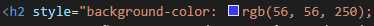
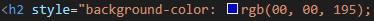
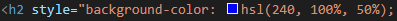

É possível representar cores por números hexadecimais, onde, dois digitos são para o vermelho, dois para o verde e dois são para o azul, exemplo:
Neste exemplo, o nosso heading está configurado como 56 puxando para o vermelho, 56 puxando para o verde e 250 puxando para o azul.
Existe outra maneira de se colocar cores usando css que é usando o próprio código rgb, que se configura da seguinte maneira: digita-se "rgb (quantidade de vermelho, quantidade de verde, quantidade de azul);", segue o exemplo a seguir:
Existe ainda uma terceira maneira que é usando caracteristicas de cores, todas as cores possuem caracteristicas como: matix, saturação e luminosidade. Essas três caracteristicas, podem ser expressas a partir da função "hsl();", exemplo:
Neste caso, temos 240 de matix, 100% de saturação e 50% de luminosidade.